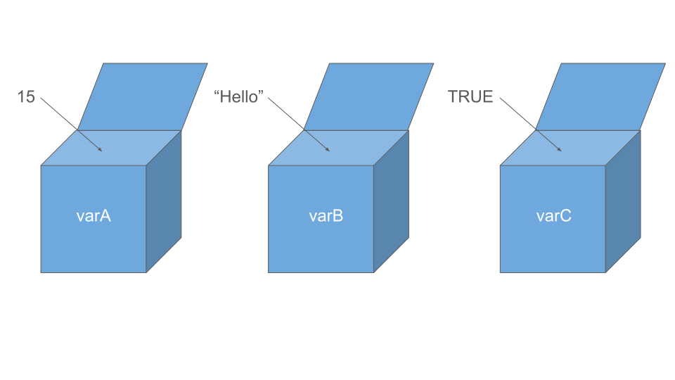
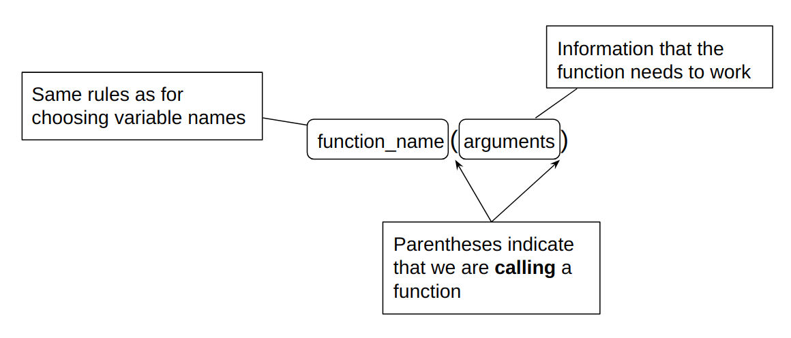

Using R/RStudio for the first time
Discovering the R console
R is an interpreted language. If you write a code line in the console and validate it, you will instant see the result of your code. This is the simpliest case in computer programming : I give an instruction, this instruction is interpreted and the result is displayed.
Let’s see some example of interpretation of simple instructions.
42Solution
[1] 42If you just type a number, R will interpret the simplest way : by returning the number you entered. Here, it will be 42. The interpretation in this case is simple.
2+3Solution
[1] 5Unlike the previous line, R will not return “2+3”, but it interpret the “+” symbol as an addition. R is able to interpret certain symbol especially for arithmetic operation for example.
4*5Solution
[1] 20You can do the same manipulation with a multiplication, the “*” symbol is interpreted as a multiplication
6/4Solution
[1] 1.5Same phenomenon, but with the division, the “/” symbol is interpreted as a division
1:10Solution
[1] 1 2 3 4 5 6 7 8 9 10This line is different. The “:” is called a colon. With this symbol you can generate a sequence of number.
8:-9Solution
[1] 8 7 6 5 4 3 2 1 0 -1 -2 -3 -4 -5 -6 -7 -8 -9Same as the previous line, here we generate a sequence of number with negative and positive numbers.
1,2Solution
Erreur : ',' inattendu(e) dans "1,"
Oops, it seems we have a problem here. The interpreter obviously cannot read the comma correctly...1.2Solution
[1] 1.2R is demanding when it comes to the use of certain symbols, particularly decimal numbers. In french, we used to write the decimal with a comma like in this example. But in English, the decimal separator is a point not a comma. If you write it with a comma, an error will occurred, R can’t interpret what you wrote.
# This is a commentSolution
You can write entire lines of text. To do this, simply use the “#” symbol at the beginning of the line. This code line is called a comment, and it is used to indicate that the different lines of code we write do.
It’s a simple yet very important element when we write a script. As code becomes more and more substantial, and hours of work accumulate on it, it’s easy to get lost. That’s why it’s essential to comment on the lines you write, so that you can find your way around even years later.
Work with variables
A variable is a storage space, like a box. In this box, you can store a value that can have different types : numeric, string, table…
Sounds great, but what’s it really for? It’s probably the question you’ve been asking yourself.
You probably noticed when doing the previous exercise in the console, that what you entered was interpreted and returned as a result. However, it’s impossible to retrieve this result unless you retype the instruction line.
Here’s what we’re going to use the variables for. We can store simple structures like numbers or characters string, but we can also store more complex structures such as arrays or matrices. This is called the type of a variable.

It’s an important notion in programming, and even more in R, as the language is sometimes rather capricious with variable typing as we will see during the course.
Here is a reminder of some existing types :
| Type | Description | Examples | Notes |
|---|---|---|---|
| Numeric / Integer | float, integer, complex | 8, 1.8 | The point is used for decimal |
| Character / String | character, character string | “char1”,‘char2’ | Character strings are defined by simple or double quotes |
| Logic / Boolean | logical used for comparison (==, !=, >, %in%, …) | TRUE, FALSE | Predefined variables |
| Other types | NA, NULL | missing value, empty | Predefined variables, impact mathematical operation |
| Functions | Embed instructions and return a result | max(arg1,arg2) substring(arg1,arg2,…) | Many functions are predefined, read the help |
Assign a value to a variable
Now that you know what variables are for, we will see how to assign a value in a variable. To do this, you can use two different symbols The first symbol is <-. Generally it is preferred when assigning values to variables. But you can also use = symbol to assign a value. The reason is the symbol “=” is also used for other things and it can creates confusion when writing code.
Let’s see an example :
P240_nb_rep <- 3
P240_nb_repSolution
[1] 3Here we created a variable named P240_nb_rep and we assigned the value 3 in the variable. So when we write “P240_nb_rep” in the console for example, the value 3 appears.
Remember ? We saw that RStudio offered several panels, including one called Environment.
Normally, if you take a look, you’ll see that your variable “P240_nb_rep” appeared. All the variables you create will appear in this panel.
Name a variable
The choice of name is important: it must be clear to identify the function of the variable and what it contains. In our example, we named our variable ‘P240_nb_rep’ that store the number of replicates (3) for patient 240.
There are certain rules to follow when choosing a name :
- Cannot start with a number.
- Cannot contain special characters like
&,",',/,@,$,(),[],{}, and more generally all mathematical operators and punctuation. - Case-sensitive : name ≠ Name.
240_nb_rep <- 30Solution
Erreur : entrée inattendue dans “240_”
First rule broken ! R does not support variables whose name begins with a digit.
patients@samples <- 30Solution
Erreur : objet ‘patients’ introuvable
It seems that R does not understand this syntax either. The “@” symbol is not accepted in the name.
sample <- "lung"
SampleSolution
Erreur : objet ‘Sample’ introuvable
Here the definition of the variable is correct. The problem is the case, our variable is called “sample” not “Sample”.
Some names are best avoided. In R, there are variables and functions with predefined names. For example, the variable named “pi” is already implemented in R and return the value of pi. If you assign, for example, the value 10 to “pi”, the variable “pi” will return 10 and not 3.14
piSolution
[1] 3.141593pi <- 10
piSolution
[1] 10Discovering of functions
A function is a set of instructions that you can re-use. A function is composed with a name and arguments. So, it is possible to build your own functions to do whatever you want.

But before build functions on your own, you can use built-in functions in R. Those functions are ready-to-use. Some of them are directly in the base of R, however, for the majority, you will have to download packages (we will see later how to download and install packages).
We will take, as example, the built-in function to compute the square root.
Firstly, you can find some help to know how to use a function.
?sqrt
#or
help(sqrt)Solution
“sqrt” is the name of the function and the function take one argument (represented by x in the help window). Moreover, the help explains that the argument must be a numeric, a vector or an array.
Don’t forget to use internet request to have more information.
sqrt(25)Solution
[1] 5The function simply return the result of the square root for 25.
As you probably notice, this function is pretty simple. The function takes just one argument called x. This ‘x’ must be a number. We saw earlier in this course the notion of variables. Let’s combine variable with function.
our_value <- 25
sqrt(our_value)Solution
The first thing we do is to define our variable. We called it our_value and we assign 25. And we calculate the square root.
[1] 5We have the expected result : 5. The function has taken into account the variable and its contents in order to return the expected result.
Exercise with the logarithm
Now it’s your turn! We ask you to use a function already present in R, in order to calculate logarithms The function works in a similar way to the previous one, but perhaps there are differences ?
- What is the function to use ?
Solution
This is the first step, if you don’t know the function you want to use : use help panel or search on the internet. If you start writing log in the console, you’ll see that there are indeed several functions beginning with log. But the one we’re most interested in is the first one, called log.
?log
help(log)- How many arguments does it takes ?
Solution
The function log takes 2 arguments : x : this is basically a number for example, base : this argument allows to specify which base you want to use
- What type of variable does it accepts ?
Solution
The first argument x must be a numeric or a vector. The base argument must be a positive number.
- What type of variable does it returns ?
Solution
The function returns the result in numeric type.
- What are default parameters ?
Solution
We saw that we have 2 arguments in this function. Only one of them have a default parameter and this is base argument. It takes e=exp(1) by default.
So you’ve discovered the log function and how to use it.
With the same function, compute the logarithm base 2 of 1000.
Solution
log(10, base=2)[1] 3.321928We took in example the log base 2 of 1000 for 10. The argument x is 10 and the base argument is equal to 2.
NB : You may have noticed when looking for help for the log function, that there is a function called log2(). This function is the same as log, simply with the base set to 2. That’s why there’s only one argument here: x Here’s how it would look :
log2(10)[1] 3.321928The result is the same!